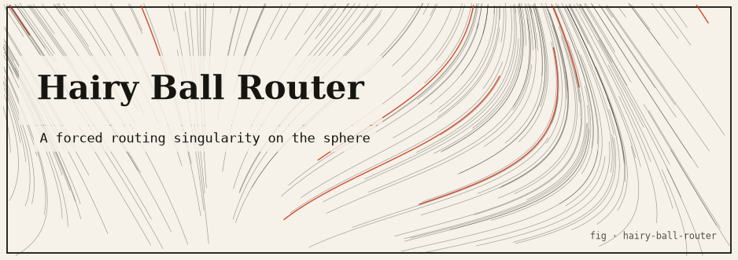

Hairy Ball Router: routing along a field you can’t comb flat
Routes packets across the sphere S² by following a continuous tangent vector field — the Hairy Ball Theorem forces at least one zero, which becomes the destination sink.

The idea
The Hairy Ball Theorem (proved by L. E. J. Brouwer in 1912) is one of those results that sounds like a party trick and turns out to be deep topology. Imagine a ball completely covered in hair, and try to comb every hair flat so it lies tangent to the surface, with no hair sticking straight up and no bald spot. The theorem says you can’t. No matter how you comb, there will always be at least one point — a cowlick, whorl, or tuft — where the combing breaks down. Stated formally: there is no continuous, nowhere-zero tangent vector field on the 2-sphere S².
The everyday consequences are real. Because wind is (to good approximation) a tangent vector field on the Earth’s surface, the theorem guarantees that at any instant there is at least one point on the globe where the horizontal wind speed is zero — the calm eye of a cyclone is the vivid example. You cannot have a smooth, non-stop breeze everywhere on a planet.
This package turns that guarantee into a routing rule. It defines a continuous tangent vector field on S² with a designated zero, and routes each packet by following the field across the sphere. Every path flows steadily toward the mandatory zero — the “cowlick” that topology promises must exist — and uses it as the destination sink. The routing step is a projected gradient-style flow along the sphere.
Why must a zero exist?
The reason is not about combing skill; it is a topological invariant of the sphere itself. Every closed surface has a whole number called its Euler characteristic (χ), computable from any triangulation as vertices − edges + faces. For the 2-sphere, χ(S²) = 2. This number does not depend on how you draw the mesh — it is baked into the shape.
The Poincaré–Hopf theorem ties vector fields to that invariant: for any continuous tangent vector field with isolated zeros, the sum of the indices of those zeros (a signed count of how the field winds around each one) must equal the Euler characteristic of the surface. On the sphere that sum is forced to be 2. Since an empty sum is 0, a field with no zeros at all is impossible — 2 ≠ 0. That is precisely the Hairy Ball Theorem. By contrast, a torus (doughnut) has χ = 0, which is why you can comb a hairy doughnut flat.
How this project demonstrates it
The router constructs an explicit continuous tangent field on the sphere — a longitude-following “comb” — and integrates a packet’s motion along it, projecting each step back onto the tangent plane so the packet stays on the surface. The field is built so that a distinguished zero acts as the sink; packets released from arbitrary latitudes and longitudes flow along the field and arrive there.
The point of the exercise is that the sink is not an arbitrary design choice you could optimise away — its existence is guaranteed by topology. No matter how the field is reshaped, Poincaré–Hopf insists a zero remains, so there is always somewhere for the flow to terminate. Running the program prints a packet’s step count and its shrinking angular distance to the sink as it converges.
The mathematics
S² = { (x,y,z) : x² + y² + z² = 1 }
Tangent vector field V : S² → TS² (continuous, one zero at north pole)
V(θ,φ) = (-sin φ, cos φ, 0) (standard "comb" with zero at poles)
Routing: dP/dt = V(P) (follow field, projected onto tangent plane)
Packets converge to the zero of V (the sink node)
Hairy Ball Theorem: every continuous V on S² has ‖V(p)‖ = 0 for some p
→ the sink is mathematically guaranteed to exist
Run it
git clone https://github.com/caelum0x/awesome-mad-projects.git cd hairy-ball-router go test ./... go run . # Packet routed from (lat=45°, lon=30°) → sink at north pole # Steps: 142 Final distance to sink: 0.003 rad
Hairy Ball Theorem questions
What is the Hairy Ball Theorem?
It states that every continuous tangent vector field on the ordinary 2-sphere S² must vanish at at least one point. Informally, you cannot comb the hair on a ball perfectly flat — there is always at least one cowlick or tuft where the hair stands up.
Why must there always be a zero?
The obstruction is topological. The Euler characteristic of the sphere is 2, and the Poincaré–Hopf theorem says the indices of a vector field’s zeros must sum to the Euler characteristic. Because 2 is not 0, the field cannot be everywhere non-zero.
How does the router use the theorem?
It builds a continuous tangent field on S² with a designated zero and routes each packet by following the field. Every path flows toward that guaranteed zero, which acts as the sink or destination node.
Honest caveat: using a topological sink as a “router” is an illustrative framing, not a practical network design — real routing optimises latency and bandwidth, not descent along a vector field, and a single forced sink would be a bottleneck, not a feature. The theorem itself, and the guarantee that a zero must exist, are exactly correct; the routing application is a teaching metaphor.